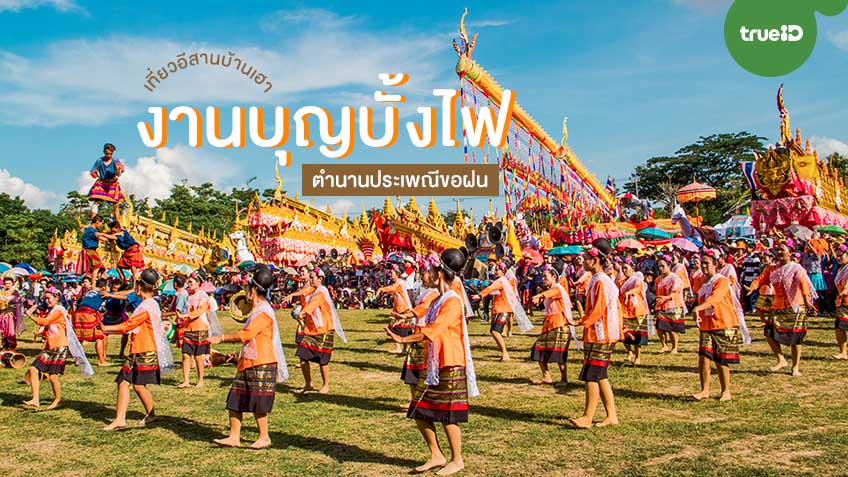

งานประเพณีบุญบั้งไฟ
เป็นหนึ่งในฮีตสิบสองเดือนของชาวอีสานนิยมทำกันในเดือน 6 หรือเดือน 7 อัน เพื่อเป็นการบูชาแถนขอฝนให้ตกต้องตามฤดูกาล
เป็นหนึ่งในฮีตสิบสองเดือนของชาวอีสานนิยมทำกันในเดือน 6 หรือเดือน 7 อัน เพื่อเป็นการบูชาแถนขอฝนให้ตกต้องตามฤดูกาล
เป็นการบูชาพระบรมธาตุขององค์สมเด็จพระสัมมา สัมมาพุทธเจ้า
งานประเพณีลอยกระทงสายและประเพณีแข่งเรือพายโบราณ ที่มีความเป็นเอกลักษณ์ของชาวอำเภอบ้านตาก